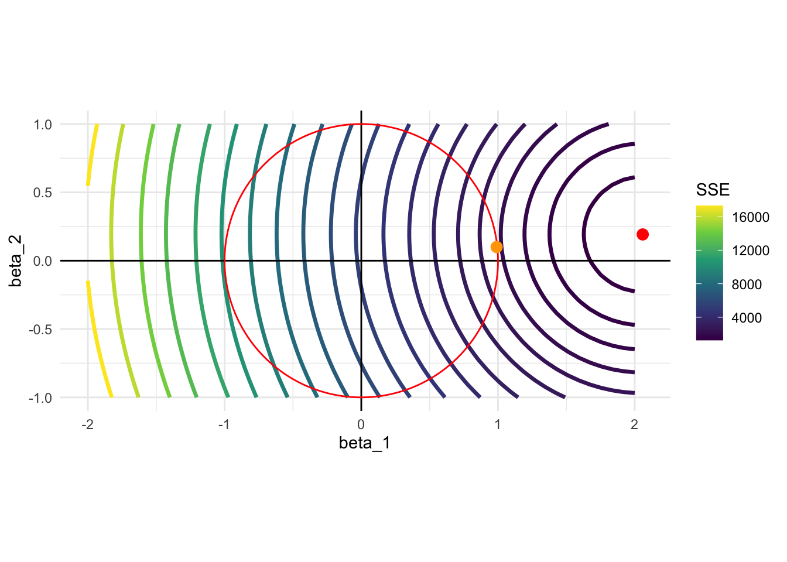
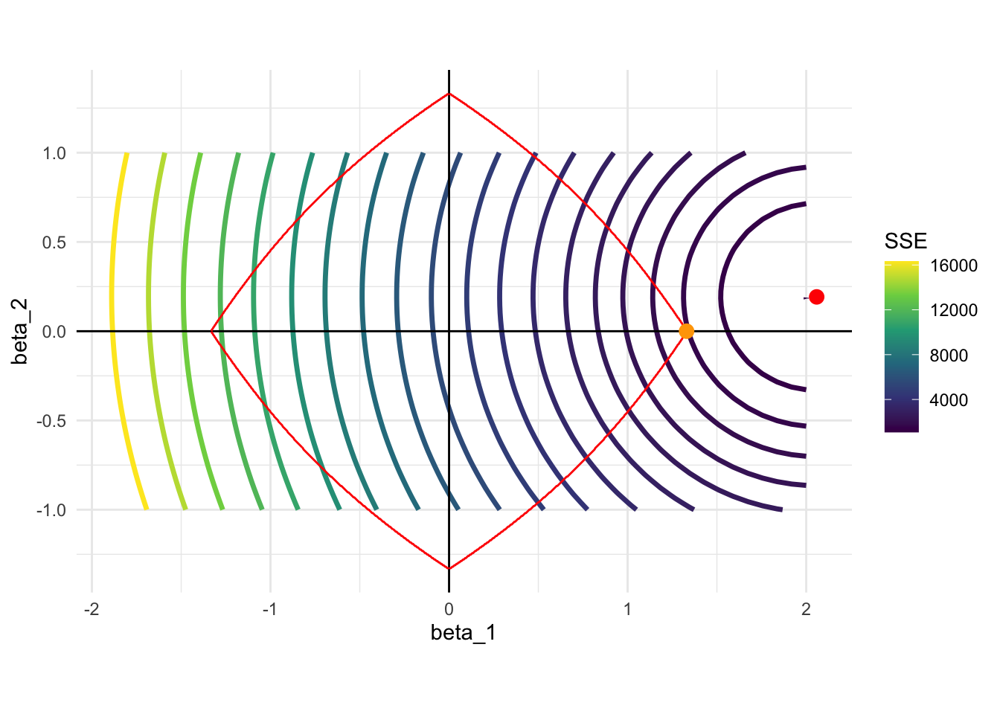
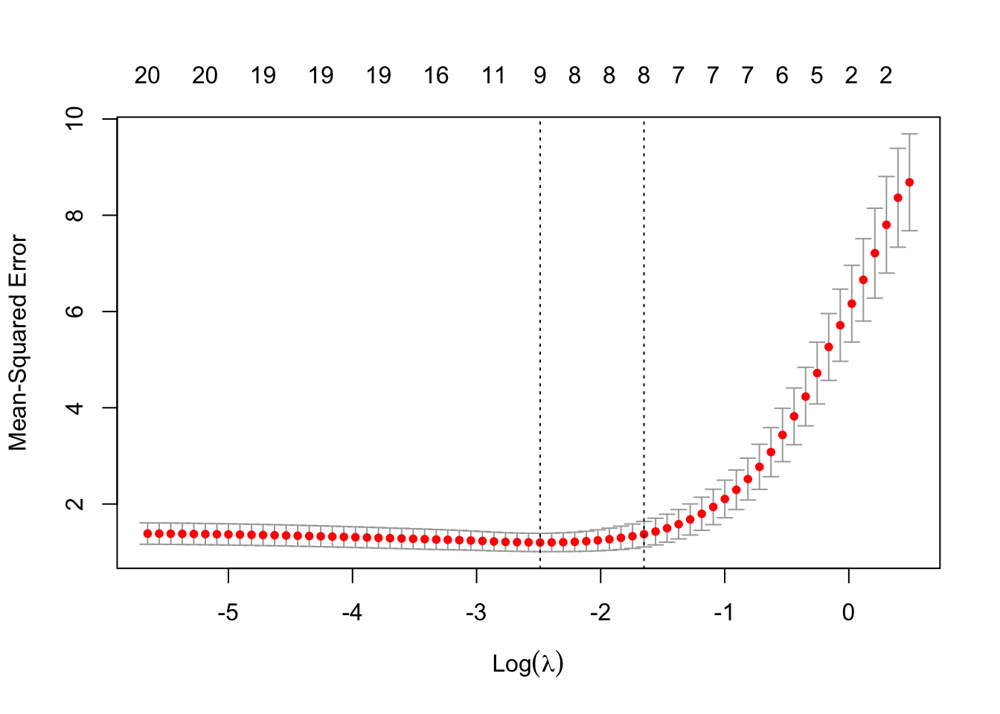

library(data.table)
library(tidyverse)
library(glmnet)4 Regression Shrinkage Methods
4.1 Shrinkage Methods
We have talked about variance-bias trade-off. When you “shrink” coefficients towards zero, you may be able to achieve lower variance of \(\hat{f}(x)\) while increasing bias, which can result in a lower MSE.
Consider the following generic linear model:
\[ y = X\beta + \mu \]
- \(y\): dependent variable
- \(X\): a collection of explanatory variables (\(K\) variables)
- \(\beta\): a collection of coefficients on the explanatory variables \(X\)
- \(\mu\): error term
Borrowing from the documentation of the glmnet package(), the minimization problem shrinkage methods solve to estimate coefficients for a linear model can be written as follows:
\[ Min_{\beta} \sum_{i=1}^N (y_i - X_i\beta)^2 + \lambda \huge[\normalsize(1-\alpha)||\beta||^2_2/2 + \alpha ||\beta||_1\huge] \tag{4.1}\]
\(||\beta||_1 = |\beta_1| + |\beta_2| + \dots+ |\beta_K|\) (called L1 norm)
\(||\beta||_2 = (|\beta_1|^2 + |\beta_2|^2 + \dots+ |\beta_K|^2)^{\frac{1}{2}}\) (called L2 norm)
\(\lambda (> 0)\) is the penalization parameter that governs how much coefficients shrinkage happens (more details later).
The shrinkage method is called Lasso when \(\alpha = 1\), Ridge regression when \(\alpha = 0\), and elastic net when \(\alpha \in (0, 1)\).
Ridge regression and elastic net are rarely used. So, we are going to cover only Lasso here.
4.2 Lasso
Packages to load for replication
When there are many potential variables to include, it is hard to know which ones to include. Lasso can be used to select variables to build a more parsimonious model, which may help reducing MSE.
As mentioned above, Lasso is a special case of shrinkage methods where \(\alpha = 1\) in Equation 4.1. So, the optimization problem of Lasso is
\[ Min_{\beta} \sum_{i=1}^N (y_i - X_i\beta)^2 + \lambda \sum_{k=1}^K |\beta_k| \tag{4.2}\]
, where \(\lambda\) is the penalization parameter.
Alternatively, we can also write the optimization problem as the constrained minimization problem as follows1:
\[ \begin{aligned} Min_{\beta} & \sum_{i=1}^N (y_i - X_i\beta)^2 \\ \mbox{s.t. } & \sum_{k=1}^K |\beta_k| \leq t \end{aligned} \tag{4.3}\]
A graphical representation of the minimization problem is highly illustrative on what Lasso does. Consider the following data generating process:
\[ y = 0.2 x_1 + 2 * x_2 + \mu \]
When \(t\) is set to 1 in Equation 4.3, Lasso tries to estimate the coefficient on \(x_1\) and \(x_2\) by solving the following problem:
\[ \begin{align} Min_{\beta} & \sum_{i=1}^N (y_i - \beta_1 x_1 - \beta_2 x_2)^2 \\ \mbox{s.t. } & \sum_{k=1}^K |\beta_k| \leq \textcolor{red}{1} \end{align} \]
This means that, we need to look for the combinations of \(\beta_1\) and \(\beta_2\) such that the sum of their absolute values is less than 1. Graphically, here is what the constraint looks like:
Code
ggplot() +
geom_hline(yintercept = 0) +
geom_vline(xintercept = 0) +
geom_segment(aes(x = 1, y = 0, xend = 0, yend = 1), color = "red", size = 1.2) +
geom_segment(aes(x = 1, y = 0, xend = 0, yend = -1), color = "red", size = 1.2) +
geom_segment(aes(x = -1, y = 0, xend = 0, yend = 1), color = "red", size = 1.2) +
geom_segment(aes(x = -1, y = 0, xend = 0, yend = -1), color = "red", size = 1.2) +
coord_equal() +
xlab("beta_1") +
ylab("beta_2") +
theme_minimal()Now, let’s calculate what value the objective function takes at different values of \(\beta_1\) and \(\beta_2\).
We first generate data.
N <- 1000 # number of observations
x_1 <- rnorm(N)
x_2 <- rnorm(N)
mu <- rnorm(N) # error term
y <- 2 * x_1 + 0.2 * x_2 + mu
data <-
data.table(
y = y,
x_1 = x_1,
x_2 = x_2
)Without the constraint, here is the combination of \(\beta_1\) and \(\beta_2\) that minimizes the objective function of Equation 4.3, which is the same as OLS estimates.
(
ols_coefs_1 <- lm(y ~ x_1 + x_2, data = data)$coefficient
)(Intercept) x_1 x_2
0.009782098 2.065641351 0.191960188 We now calculate the value of the objective functions at different values of \(\beta_1\) and \(\beta_2\). Here is the set of \(\{\beta_1, \beta_2\}\) combinations we look at.
(
beta_table <-
data.table::CJ(
beta_1 = seq(-2, 2, length = 50),
beta_2 = seq(-1, 1, length = 50)
)
) beta_1 beta_2
1: -2 -1.0000000
2: -2 -0.9591837
3: -2 -0.9183673
4: -2 -0.8775510
5: -2 -0.8367347
---
2496: 2 0.8367347
2497: 2 0.8775510
2498: 2 0.9183673
2499: 2 0.9591837
2500: 2 1.0000000Loop over the row numbers of beta_table to find SSE for all the rows (all the combinations of \(\beta_1\) and \(\beta_2\)).
#=== define the function to get SSE ===#
get_sse <- function(i, data)
{
#=== extract beta_1 and beta_2 for ith observation ===#
betas <- beta_table[i, ]
#=== calculate SSE ===#
sse <-
copy(data) %>%
.[, y_hat := x_1 * betas[, beta_1] + x_2 * betas[, beta_2]] %>%
.[, se := (y - y_hat)^2] %>%
.[, sum(se)]
return(sse)
}
#=== calculate SSE for each row of beta_table ===#
sse_all <-
lapply(
1:nrow(beta_table),
function(x) get_sse(x, data)
) %>%
unlist()
#=== assign the calculated sse values as a variable ===#
(
beta_table[, sse_1 := sse_all]
)Here is the contour map of SSE as a function of \(\beta_1\) and \(\beta_2\). The solution to the unconstrained problem (OLS estimates) is represented by the red point. Since Lasso needs to find a point within the red square, the solution would be \(\beta_1 = 1\) and \(\beta_2 = 0\) (yellow point). Lasso did not give anything to \(\beta_2\) as \(x_1\) is a much bigger contributor of the two included variables. Lasso tends to give the coefficient of \(0\) to some of the variables when the constraint is harsh, effectively eliminating them from the model. For this reason, Lasso is often used as a variable selection method.
Code
ggplot() +
stat_contour(
data = beta_table,
aes(x = beta_1, y = beta_2, z = sse_1, color = ..level..),
size = 1.2,
breaks =
round(
quantile(beta_table$sse_1, seq(0, 1, 0.05)),
0
)
) +
scale_color_viridis_c(name = "SSE") +
geom_hline(yintercept = 0) +
geom_vline(xintercept = 0) +
geom_segment(aes(x = 1, y = 0, xend = 0, yend = 1), color = "red", size = 1.2) +
geom_segment(aes(x = 1, y = 0, xend = 0, yend = -1), color = "red", size = 1.2) +
geom_segment(aes(x = -1, y = 0, xend = 0, yend = 1), color = "red", size = 1.2) +
geom_segment(aes(x = -1, y = 0, xend = 0, yend = -1), color = "red", size = 1.2) +
#=== OLS point estimates (solutions without the constraint) ===#
geom_point(
aes(x = ols_coefs_1["x_1"], y = ols_coefs_1["x_2"]),
color = "red",
size = 3
) +
geom_point(
aes(x = 1, y = 0),
color = "yellow",
size = 3
) +
coord_equal() +
theme_minimal()
Let’s consider a different data generating process: \(y = x_1 + x_2 + \mu\). Here, \(x_1\) and \(x_2\) are equally important unlike the previous case. Here is what happens:
Code
N <- 1000 # number of observations
x_1 <- rnorm(N)
x_2 <- rnorm(N)
mu <- rnorm(N) # error term
y <- x_1 + x_2 + mu
data <-
data.table(
y = y,
x_1 = x_1,
x_2 = x_2
)
ols_coefs_2 <- lm(y ~ x_1 + x_2, data = data)$coefficient
#=== calculate sse for each row of beta_table ===#
sse_all <-
lapply(
1:nrow(beta_table),
function(x) {
betas <- beta_table[x, ]
sse <-
copy(data) %>%
.[, y_hat := x_1 * betas[, beta_1] + x_2 * betas[, beta_2]] %>%
.[, se := (y - y_hat)^2] %>%
.[, sum(se)]
return(sse)
}
) %>%
unlist()
#=== assign the calculated sse values as a variable ===#
beta_table[, sse_2 := sse_all]
#=== visualize ===#
ggplot() +
stat_contour(
data = beta_table,
aes(x = beta_1, y = beta_2, z = sse_2, color = ..level..),
size = 1.2,
breaks =
round(
quantile(beta_table$sse_2, seq(0, 1, 0.05)),
0
)
) +
scale_color_viridis_c(name = "SSE") +
geom_hline(yintercept = 0) +
geom_vline(xintercept = 0) +
geom_segment(aes(x = 1, y = 0, xend = 0, yend = 1), color = "red", size = 1.2) +
geom_segment(aes(x = 1, y = 0, xend = 0, yend = -1), color = "red", size = 1.2) +
geom_segment(aes(x = -1, y = 0, xend = 0, yend = 1), color = "red", size = 1.2) +
geom_segment(aes(x = -1, y = 0, xend = 0, yend = -1), color = "red", size = 1.2) +
#=== OLS point estimates (solutions without the constraint) ===#
geom_point(
aes(x = ols_coefs_2["x_1"], y = ols_coefs_2["x_2"]),
color = "red",
size = 3
) +
geom_point(
aes(x = 0.5, y = 0.5),
color = "yellow",
size = 3
) +
coord_equal() +
theme_minimal()In this case, the solution would be (very close to) \(\{\beta_1 = 0.5, \beta_2 = 0.5\}\), with neither of them sent to zero. This is because \(x_1\) and \(x_2\) are equally important in explaining \(y\).
4.3 Ridge and Elastic Net regression
Ridge regression uses L2 norm for regularization and solves the following minimization problem:
\[ \begin{aligned} Min_{\beta} & \sum_{i=1}^N (y_i - X_i\beta)^2 \\ \mbox{s.t. } & \sum_{k=1}^K \beta_k^2 \leq t \end{aligned} \tag{4.4}\]
Figure 4.1 shows the constraint when \(t=1\) (red circle) and the contour of SSE for the first model we considered (\(E[y|x] = 2 \times x_1 + 0.2 \times x_2\)). Unlike Lasso, the constraint is a circle (since it is two-dimensional), and you can expect that Ridge coefficient estimates do not generally become 0. Therefore, Ridge regression cannot be used for variable selection.
Code
ggplot() +
stat_contour(
data = beta_table,
aes(x = beta_1, y = beta_2, z = sse_1, color = ..level..),
size = 1.2,
breaks =
round(
quantile(beta_table$sse_1, seq(0.033, 1, 0.05)),
0
)
) +
scale_color_viridis_c(name = "SSE") +
geom_hline(yintercept = 0) +
geom_vline(xintercept = 0) +
ggforce::geom_circle(aes(x0 = 0, y0 = 0, r = 1), color = "red") +
#=== OLS point estimates (solutions without the constraint) ===#
geom_point(
aes(x = ols_coefs_1["x_1"], y = ols_coefs_1["x_2"]),
color = "red",
size = 3
) +
geom_point(
aes(x = 0.99, y = 0.1),
color = "orange",
size = 3
) +
coord_equal() +
theme_minimal()
Ridge regression estimator has a nice analytical formula. Let \(Y\) and \(X\) denote the \(N \times 1\) matrix of the dependent variable and \(N \times K\) matrix, respectively (\(N\) is the number of observations and \(K\) is the number of covariates). Then,
\[ \begin{aligned} \hat{\beta}_{Ridge} = (X'X + \lambda I)^{-1}X'Y \end{aligned} \]
where \(\lambda\) is the penalization parameter and \(I\) is the \(K \times K\) identify matrix.
Elastic net is at somewhere between Lasso and Ridge with \(0 < \alpha < 1\) in Equation 4.1 and solves the following minimization problem:
\[ \begin{aligned} Min_{\beta} & \sum_{i=1}^N (y_i - X_i\beta)^2 \\ \mbox{s.t. } & \frac{1-\alpha}{2}\sqrt{\sum_{k=1}^K \beta_k^2} + \alpha\sum_{k=1}^K |\beta_k| \leq t \end{aligned} \tag{4.5}\]
Figure 4.2 shows the constraint when \(t=1\) (red circle) and the contour of SSE for the first model we considered (\(E[y|x] = 2 \times x_1 + 0.2 \times x_2\)). Its constraint is a mix of that of Lasso and Ridge regression. It has four pointy points at the points where either one of \(\beta_1\) and \(\beta_2\) just like Lasso. But, the curves that connect those points are not straight. Elastic net can eliminate variables (setting coefficients to 0), but not as strongly as Lasso does.
Code
get_const <- function(x1, x2, alpha){
(1 - alpha) * sqrt(x1^2 + x2^2) / 2 + alpha * (abs(x1) + abs(x2))
}
alpha <- 0.5
en_const_data <-
CJ(
x1 = seq(-2, 2, length = 1000),
x2 = seq(-2, 2, length = 1000)
) %>%
.[, c := abs(get_const(x1, x2, alpha)-1)] %>%
.[, x2_sign := x2 < 0] %>%
.[, .SD[which.min(c), ], by = .(x1, x2_sign)] %>%
.[abs(x1) <= 2/(1+alpha), ]
ggplot() +
stat_contour(
data = beta_table,
aes(x = beta_1, y = beta_2, z = sse_1, color = ..level..),
size = 1.2,
breaks =
round(
quantile(beta_table$sse_1, seq(0, 1, 0.05)),
0
)
) +
scale_color_viridis_c(name = "SSE") +
geom_hline(yintercept = 0) +
geom_vline(xintercept = 0) +
#=== elastic net constraint ===#
geom_line(data = en_const_data[x1 > 0 & x2 > 0], aes(x=x1, y = x2), color = "red") +
geom_line(data = en_const_data[x1 < 0 & x2 > 0], aes(x=x1, y = x2), color = "red") +
geom_line(data = en_const_data[x1 > 0 & x2 < 0], aes(x=x1, y = x2), color = "red") +
geom_line(data = en_const_data[x1 < 0 & x2 < 0], aes(x=x1, y = x2), color = "red") +
#=== OLS point estimates (solutions without the constraint) ===#
geom_point(
aes(x = ols_coefs_1["x_1"], y = ols_coefs_1["x_2"]),
color = "red",
size = 3
) +
geom_point(
aes(x = 1.33, y = 0),
color = "orange",
size = 3
) +
coord_equal() +
theme_minimal()
4.4 Lasso implementation: R
You can use the glmnet() from the glmnet package to run Lasso. For demonstration, we use the QuickStartExample data.
#=== get the data ===#
data(QuickStartExample)
#=== see the structure ===#
str(QuickStartExample)List of 2
$ x: num [1:100, 1:20] 0.274 2.245 -0.125 -0.544 -1.459 ...
$ y: num [1:100, 1] -1.275 1.843 0.459 0.564 1.873 ...As you can see, QuickStartExample is a list of two elements. First one (x) is a matrix of dimension 100 by 20, which is the data of explanatory variables. Second one (y) is a matrix of dimension 100 by 1, which is the data for the dependent variable.
By default, alpha parameter for glmnet() (\(\alpha\) in Equation 4.1) is set to 1. So, to run Lasso, you can simply do the following:
#=== extract X and y ===#
X <- QuickStartExample$x
y <- QuickStartExample$y
#=== run Lasso ===#
lasso <- glmnet(X, y)By looking at the output below, you can see that glmnet() tried many different values of \(\lambda\).
lasso
Call: glmnet(x = X, y = y)
Df %Dev Lambda
1 0 0.00 1.63100
2 2 5.53 1.48600
3 2 14.59 1.35400
4 2 22.11 1.23400
5 2 28.36 1.12400
6 2 33.54 1.02400
7 4 39.04 0.93320
8 5 45.60 0.85030
9 5 51.54 0.77470
10 6 57.35 0.70590
11 6 62.55 0.64320
12 6 66.87 0.58610
13 6 70.46 0.53400
14 6 73.44 0.48660
15 7 76.21 0.44330
16 7 78.57 0.40400
17 7 80.53 0.36810
18 7 82.15 0.33540
19 7 83.50 0.30560
20 7 84.62 0.27840
21 7 85.55 0.25370
22 7 86.33 0.23120
23 8 87.06 0.21060
24 8 87.69 0.19190
25 8 88.21 0.17490
26 8 88.65 0.15930
27 8 89.01 0.14520
28 8 89.31 0.13230
29 8 89.56 0.12050
30 8 89.76 0.10980
31 9 89.94 0.10010
32 9 90.10 0.09117
33 9 90.23 0.08307
34 9 90.34 0.07569
35 10 90.43 0.06897
36 11 90.53 0.06284
37 11 90.62 0.05726
38 12 90.70 0.05217
39 15 90.78 0.04754
40 16 90.86 0.04331
41 16 90.93 0.03947
42 16 90.98 0.03596
43 17 91.03 0.03277
44 17 91.07 0.02985
45 18 91.11 0.02720
46 18 91.14 0.02479
47 19 91.17 0.02258
48 19 91.20 0.02058
49 19 91.22 0.01875
50 19 91.24 0.01708
51 19 91.25 0.01557
52 19 91.26 0.01418
53 19 91.27 0.01292
54 19 91.28 0.01178
55 19 91.29 0.01073
56 19 91.29 0.00978
57 19 91.30 0.00891
58 19 91.30 0.00812
59 19 91.31 0.00739
60 19 91.31 0.00674
61 19 91.31 0.00614
62 20 91.31 0.00559
63 20 91.31 0.00510
64 20 91.31 0.00464
65 20 91.32 0.00423
66 20 91.32 0.00386
67 20 91.32 0.00351You can access the coefficients for each value of lambda by applying coef() method to lasso.
#=== get coefficient estimates ===#
coef_lasso <- coef(lasso)
#=== check the dimension ===#
dim(coef_lasso)[1] 21 67#=== take a look at the first and last three ===#
coef_lasso[, c(1:3, 65:67)]21 x 6 sparse Matrix of class "dgCMatrix"
s0 s1 s2 s64 s65
(Intercept) 0.6607581 0.631235043 0.5874616 0.111208836 0.111018972
V1 . 0.139264992 0.2698292 1.378068980 1.378335220
V2 . . . 0.023067319 0.023240539
V3 . . . 0.762792114 0.763209604
V4 . . . 0.059619334 0.060253956
V5 . . . -0.901460720 -0.901862151
V6 . . . 0.613661389 0.614081490
V7 . . . 0.117323876 0.117960550
V8 . . . 0.396890604 0.397260052
V9 . . . -0.030538991 -0.031073136
V10 . . . 0.127412702 0.128222375
V11 . . . 0.246801359 0.247227761
V12 . . . -0.063941712 -0.064471794
V13 . . . -0.045935249 -0.046242852
V14 . -0.005878595 -0.1299063 -1.158552963 -1.159038292
V15 . . . -0.137103471 -0.138012175
V16 . . . -0.045085698 -0.045661882
V17 . . . -0.047272446 -0.048039238
V18 . . . 0.051702567 0.052180547
V19 . . . -0.001791685 -0.002203174
V20 . . . -1.144262012 -1.144641845
s66
(Intercept) 0.110845721
V1 1.378578220
V2 0.023398270
V3 0.763589908
V4 0.060832496
V5 -0.902227796
V6 0.614464085
V7 0.118540773
V8 0.397596878
V9 -0.031560145
V10 0.128960349
V11 0.247615990
V12 -0.064955124
V13 -0.046522983
V14 -1.159480668
V15 -0.138840304
V16 -0.046186890
V17 -0.048737920
V18 0.052615915
V19 -0.002578088
V20 -1.144987654Applying plot() method gets you how the coefficient estimates change as the value of \(\lambda\) changes:
plot(lasso)A high L1 Norm is associated with a “lower” value of \(\lambda\) (weaker shrinkage). You can see that as \(\lambda\) increases (L1 Norm decreases), coefficients on more and more variables are set to 0.
Now, the obvious question is which \(\lambda\) should we pick? One way to select a \(\lambda\) is K-fold cross-validation (KCV), which we covered in section. We can implement KCV using the cv.glmnet() function. You can set the number of folds using the nfolds option (the default is 10). Here, let’s 5-fold CV.
cv_lasso <- cv.glmnet(X, y, nfolds = 5)The results of KCV can be readily visualized by applying the plot() method:
plot(cv_lasso)
There are two vertical dotted lines. The left one indicates the value of \(\lambda\) where CV MSE is minimized (called lambda.min). The right one indicates the highest (most regularized) value of \(\lambda\) such that the CV error is within one standard error of the minimum (called lambda.1se).
You can access the MSE-minimizing \(\lambda\) as follows:
cv_lasso$lambda.min[1] 0.07569327You can access the coefficient estimates when \(\lambda\) is lambda.min as follows
coef(cv_lasso, s = "lambda.min")21 x 1 sparse Matrix of class "dgCMatrix"
s1
(Intercept) 0.14867414
V1 1.33377821
V2 .
V3 0.69787701
V4 .
V5 -0.83726751
V6 0.54334327
V7 0.02668633
V8 0.33741131
V9 .
V10 .
V11 0.17105029
V12 .
V13 .
V14 -1.07552680
V15 .
V16 .
V17 .
V18 .
V19 .
V20 -1.05278699The following code gives you the coefficient estimates when \(\lambda\) is lambda.1se
coef(cv_lasso, s = "lambda.1se")21 x 1 sparse Matrix of class "dgCMatrix"
s1
(Intercept) 0.1536661
V1 1.3019575
V2 .
V3 0.6422426
V4 .
V5 -0.7892388
V6 0.4944794
V7 .
V8 0.2943189
V9 .
V10 .
V11 0.1058440
V12 .
V13 .
V14 -1.0402312
V15 .
V16 .
V17 .
V18 .
V19 .
V20 -0.97911724.5 Lasso implementation: Python
Coming later.
4.6 Scaling
Unlike linear model estimation without shrinkage (regularization), shrinkage method is sensitive to the scaling of independent variables. Scaling of a variable has basically no consequence in linear model without regularization. It simply changes the interpretation of the scaled variable and the coefficient estimates on all the other variables remain unaffected. However, scaling of a single variable has a ripple effect to the other variables in shrinkage methods. This is because the penalization term: \(\lambda \huge[\normalsize(1-\alpha)||\beta||^2_2/2 + \alpha ||\beta||_1\huge]\). As you can see, \(\lambda\) is applied universally to all the coefficients without any consideration of the scale of the variables.
Let’s scale the first variable in X (this variable is influential as it survived even when \(\lambda\) is very low) by 1/1000 and see what happens. Now, by default, the standardize option is set to TRUE. So, we need to set it to FALSE explicitly to see the effect.
Here is before scaling:
cv.glmnet(X, y, nfolds = 5, standardize = FALSE) %>%
coef(s = "lambda.min")21 x 1 sparse Matrix of class "dgCMatrix"
s1
(Intercept) 0.134488081
V1 1.356582806
V2 0.002908442
V3 0.721882523
V4 0.005721089
V5 -0.859558894
V6 0.576912631
V7 0.063538630
V8 0.365089628
V9 .
V10 0.048156390
V11 0.208341615
V12 -0.010921705
V13 -0.008886798
V14 -1.115694612
V15 -0.044626166
V16 .
V17 .
V18 0.009016404
V19 .
V20 -1.094425099Here is after scaling:
#=== scale the first variable ===#
X_scaled <- X
X_scaled[, 1] <- X_scaled[, 1] / 1000
cv.glmnet(X_scaled, y, nfolds = 5, standardize = FALSE) %>%
coef(s = "lambda.min")21 x 1 sparse Matrix of class "dgCMatrix"
s1
(Intercept) 0.50425918
V1 .
V2 .
V3 0.61936464
V4 -0.03220039
V5 -0.80669927
V6 0.76378533
V7 0.07011302
V8 0.10413977
V9 .
V10 .
V11 0.51438340
V12 .
V13 .
V14 -1.03381771
V15 .
V16 .
V17 .
V18 0.14223750
V19 .
V20 -1.33697637As you can see, the coefficient on the first variable is 0 after scaling. Setting standardize = TRUE (or not doing anything with this option) gives you very similar results whether the data is scaled or not.
#=== not scaled ===#
cv.glmnet(X, y, nfolds = 5, standardize = TRUE) %>%
coef(s = "lambda.min")21 x 1 sparse Matrix of class "dgCMatrix"
s1
(Intercept) 0.14867414
V1 1.33377821
V2 .
V3 0.69787701
V4 .
V5 -0.83726751
V6 0.54334327
V7 0.02668633
V8 0.33741131
V9 .
V10 .
V11 0.17105029
V12 .
V13 .
V14 -1.07552680
V15 .
V16 .
V17 .
V18 .
V19 .
V20 -1.05278699#=== scaled ===#
cv.glmnet(X_scaled, y, nfolds = 5, standardize = TRUE) %>%
coef(s = "lambda.min")21 x 1 sparse Matrix of class "dgCMatrix"
s1
(Intercept) 0.14867414
V1 1333.77821030
V2 .
V3 0.69787701
V4 .
V5 -0.83726751
V6 0.54334327
V7 0.02668633
V8 0.33741131
V9 .
V10 .
V11 0.17105029
V12 .
V13 .
V14 -1.07552680
V15 .
V16 .
V17 .
V18 .
V19 .
V20 -1.05278699While you do not have to worry about scaling issues as long as you are using glmnet(), this is something worth remembering.
References
You can consider Equation 4.2 the Lagrangian formulation of Equation 4.3.↩︎